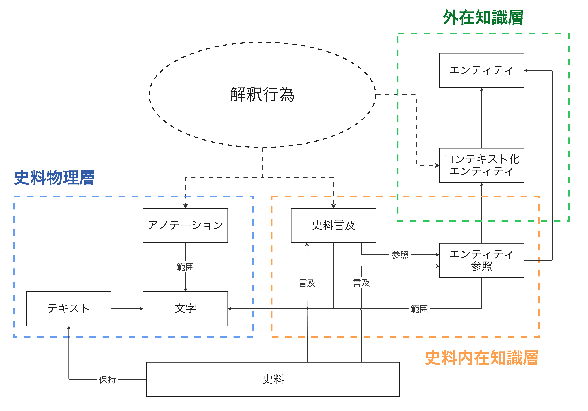
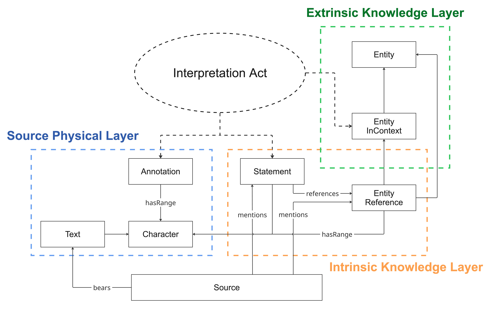

Historical Micro Knowledge and Ontology — 歴史マイクロナレッジのための概念モデルHistorical Micro Knowledge and Ontology — a conceptual model for historical micro-knowledge
HIMIKO is a conceptual model that partitions knowledge about historical sources into three layers—Physical, Intrinsic-Knowledge, and Extrinsic-Knowledge—and treats the researcher's Interpretation Act as an independent resource that cuts across all of them. In doing so it represents the physical and textual features of a source, its semantic content, its external references, and the interpretation acts involved in producing that knowledge as a single coherent knowledge graph. This page is a reference document auto-generated from the Turtle definitions of the four ontologies (hmkp, hmki, hmke, hmkia) that implement HIMIKO.
名前空間Namespaces
プレフィックスPrefix
名前空間URINamespace URI
説明Description
hmkp
urn:himiko:ontology:physical:
史料物理層Physical Layer
hmki
urn:himiko:ontology:intrinsic:
史料内在知識層Intrinsic Knowledge Layer
hmke
urn:himiko:ontology:extrinsic:
外在知識層Extrinsic Knowledge Layer
hmkia
urn:himiko:ontology:interpretation:
解釈行為層Interpretation Act Layer
rdf
http://www.w3.org/1999/02/22-rdf-syntax-ns#
rdfs
http://www.w3.org/2000/01/rdf-schema#
owl
http://www.w3.org/2002/07/owl#
xsd
http://www.w3.org/2001/XMLSchema#
dcterms
http://purl.org/dc/terms/
oa
http://www.w3.org/ns/oa#
prov
http://www.w3.org/ns/prov#
foaf
http://xmlns.com/foaf/0.1/
hico
http://purl.org/emmedi/hico/
cito
http://purl.org/spar/cito/
geo
http://www.w3.org/2003/01/geo/wgs84_pos#
インスタンス URI は urn:himiko:resource: 配下に置かれる (例: urn:himiko:resource:text:EDCS-00000007)。Instance URIs are placed under urn:himiko:resource: (e.g. urn:himiko:resource:text:EDCS-00000007).
概念図Concept Diagram


破線の Interpretation Act は 3 層をまたぐ形で位置付けられ、Annotation・Statement・EntityInContext などの生成に介在する。The dashed Interpretation Act sits across all three layers and mediates the creation of Annotation, Statement, EntityInContext, and so on.
A VOWL (Visual Notation for OWL Ontologies) visualisation that merges all classes and properties across the four layers (hmkp / hmki / hmke / hmkia). Drag nodes to reposition, and click any element to inspect details in the side panel.
右上の「Ontology」から他語彙 (FOAF, GoodRelations など) との比較や、TTL/OWL ファイルの手動アップロードも可能。可視化元データ: webvowl/data/template.json (hmk_owl/himiko_physical.ttl / himiko_intrinsic.ttl / himiko_extrinsic.ttl / himiko_interpretation.ttl を OWL2VOWL でマージ変換)。VOWL 仕様は vowl.visualdataweb.org。Use the top-right "Ontology" menu to compare with other vocabularies (FOAF, GoodRelations, etc.) or to upload TTL/OWL files manually. Source data: webvowl/data/template.json (merged from hmk_owl/himiko_physical.ttl / himiko_intrinsic.ttl / himiko_extrinsic.ttl / himiko_interpretation.ttl via OWL2VOWL). See vowl.visualdataweb.org for the VOWL specification.
史料そのものの物質的・文字情報的特徴を記述する層。Source (物理的媒体) が bears によって Text (テキスト) を担い、Text は Character の連結リストとして展開される。Annotation は Character 範囲を hasRange (startChar / endChar) で指定する。現行の ATAG 実装で最も稠密に構築されているのがこの層である。Layer for describing the material and textual characteristics of the source itself. A Source (physical medium) bears a Text via bears, and Text is expanded as a linked list of Characters. Annotation specifies a Character range via hasRange (startChar / endChar). This layer is the most densely modelled in the current ATAG implementation.
クラスClasses(4)クラスClass
hmkp:Annotation
アノテーションAnnotation
IRI:IRI:urn:himiko:ontology:physical:Annotation
文字範囲 [start, end) に対する注釈。行番号・略語展開・補完・欠損・訂正などの種類 (hmkp:kind) を持つ。An annotation over a character range [start, end). It carries a type (hmkp:kind) such as line numbering, abbreviation expansion, supplement, gap, correction, and so on.
テキストを構成する 1 文字。URI は UUID ベース (urn:himiko:resource:char:) で、テキスト編集に対して安定した参照を提供する。hmkp:next で次の文字へ連結する。A single character constituting the text. Its URI is UUID-based (urn:himiko:resource:char:), providing a stable reference across edits of the text. hmkp:next links to the following character.
クラスClass
hmkp:Source
史料Source
IRI:IRI:urn:himiko:ontology:physical:Source
史料そのものが有する物質的実体 (碑文の石材、パピルス、写本の紙・冊子など)。
テキスト情報を担う物理的な媒体を表現する。1 つの Source は hmkp:bears によって Text を担う。
また、hmkp:mentions によって史料内在知識層の Statement (イベント言及) に直接接続される。The material embodiment of the source itself (the stone of an inscription, papyrus, or the paper/codex of a manuscript). Represents the physical medium that carries textual information. A Source bears a Text via hmkp:bears, and it is also directly connected to Statements (event mentions) in the intrinsic knowledge layer via hmkp:mentions.
クラスClass
hmkp:Text
テキストText
IRI:IRI:urn:himiko:ontology:physical:Text
1 つの碑文または書簡に相当するテキスト全体。連結された文字列と、その上に載るアノテーションを束ねる。The whole text corresponding to a single inscription or letter. It bundles the concatenated character list together with the annotations laid over it.
アノテーション範囲の末尾 (offset = end - 1) にあたる Character。end は排他的境界のため end-1 を指す。hmkp:hasRange のサブプロパティ。The Character at the end of the annotation range (offset = end - 1). Since end is an exclusive boundary, this points to end-1. Sub-property of hmkp:hasRange.
テキストの先頭にあたる Character への参照。ここから hmkp:next を辿ると全文字を走査できる。Reference to the first Character in the text. Following hmkp:next from here iterates over the entire character stream.
あるリソース (Annotation、Statement、EntityReference など) がテキスト上の
特定の Character 範囲を参照することを示す抽象的な参照関係。
具体的な範囲指定は subPropertyOf として定義される startChar / endChar によって表現される。Abstract reference relation indicating that some resource (Annotation, Statement, EntityReference, etc.) refers to a specific Character range in the text. The concrete range boundaries are supplied by sub-properties (hmkp:startChar / hmkp:endChar).
Source がその内容として言及するイベント (Statement)。
史料が物理的レベルで意味的内容 (史料内在知識層の Statement) に接続することを示す抽象的関係。
Statement が実際にどの Character 範囲を指しているかは、Statement 側の hmki:mentions
プロパティで表現される (Statement は複数の Character を指すため多重関係)。The Statement (event mention) that this Source refers to as part of its content. This is an abstract relation showing that a source connects, at the physical level, to semantic content (a Statement in the intrinsic knowledge layer). The specific Character range that a Statement occupies is expressed at the Statement level via hmki:mentions.
アノテーション範囲の先頭 (offset = start) にあたる Character。hmkp:hasRange のサブプロパティ。The Character at the start (offset = start) of the annotation range. Sub-property of hmkp:hasRange.
Epigraphik-Datenbank Clauss-Slaby (EDCS) の識別子。EDH-EDCS 対応表またはファイル名から得る。Identifier in the Epigraphik-Datenbank Clauss-Slaby (EDCS). Derived from the EDH–EDCS mapping or from the file name.
アノテーションの種類。取りうる値:
line (行番号 ), expan / abbr / ex (略語展開), supplied (補完),
gap (欠損), choice (訂正), surplus (余剰),
seg / opener / closer (書簡の構造ブロック)。Type of the annotation. Permitted values include: line (line number, ), expan / abbr / ex (abbreviation expansion), supplied (supplement), gap (missing text), choice (correction), surplus (redundant), seg / other (segments and misc.).
TEI の @n 属性値。行番号 (line) や書簡セクション番号などに用いる。Text と Annotation の双方に付与されうる。Value of the TEI @n attribute. Used for line numbers, letter section numbers, and so on. Applicable to both Text and Annotation.
史料の出土地・原来地 (現代地名 / 古代地名などの複合表記も許容)。Text にも付与されうる。The find-spot or place of origin of the source. Composite modern/ancient place names are allowed. May also be attached to Text.
choice アノテーションにおいて、本文には corr を採用した際に記録される元の (誤った) 読み。For a choice annotation where the main text adopts corr, this records the original (erroneous) reading.
史料に記述された意味内容を構造化する層。Statement (イベント言及) を意味内容記述の基本単位とし、その構成要素として EntityReference を用いる。Statement は Character を直接 mentions することで史料上の根拠を保持し、EntityReference は hasRange によって指し示すテキスト範囲を明示する。Layer for structuring the semantic content described in a source. Statement (event mention) is the basic unit of semantic description, with EntityReference as its constituent. A Statement directly mentions Characters to preserve textual evidence, and EntityReference makes its referenced text range explicit through hasRange.
史料中における人物・場所・組織などへの個別の言及。
史料横断的で普遍的な実体そのもの (hmke:Entity) ではなく、あくまでその史料における一回的な言及として記述される。
史料上での表記や、史料内での役割 (hmki:hasRole) など、史料固有の情報を保持する。
史料物理層の Character 範囲を hmki:hasRange によって参照することでテキスト上の位置を指定する。An individual mention of a person, place, organisation, and so on in a source. Not the cross-source universal entity itself (hmke:Entity) but a single, source-bound mention. Records the surface form in the source and the role the mention plays within the source (hmki:hasRole).
クラスClass
hmki:Statement
イベント言及Statement
IRI:IRI:urn:himiko:ontology:intrinsic:Statement
史料中で言及されるイベント (出来事・状態・関係性) の基本単位。
論文中では MicroKnowledge とも呼ばれる。「出来事」に限定されず、エンティティに付随する
継続的な状態・属性やエンティティ間の継続的な関係性も含む。
Statement 同士は時系列・因果などの意味的関係性によって再帰的に接続されうる。
史料中の Character を hmki:mentions によって直接指し、その根拠を保持する。
InterpretationUpdateAct によって更新された Statement は新しい URI を持つ別インスタンスとして生成され、
prov:wasRevisionOf によって前バージョンの Statement を参照する。
現在の最新版は、他のいかなる Statement からも prov:wasRevisionOf で参照されていないインスタンスである。The basic unit of an event (occurrence, state, or relation) mentioned in a source. Called MicroKnowledge in the accompanying papers. Not restricted to "events": it also covers continuous states and attributes of entities, and continuous relations between entities. A Statement holds its textual evidence by mentioning Characters directly, and takes EntityReferences as its constituents.
EntityReference が指す範囲の末尾 Character。hmki:hasRange のサブプロパティ。The last Character of the range that the EntityReference points to. Sub-property of hmki:hasRange.
この Statement / EntityReference を生成した解釈行為 (hmkia:InterpretationAct)。The interpretation act (hmkia:InterpretationAct) that generated this Statement or EntityReference.
EntityReference が指し示す史料上の Character 範囲。
これによりエンティティ言及は Character レベルの根拠を持つ。
より詳細な範囲 (先頭・末尾) はサブプロパティ hmki:startChar / hmki:endChar で表現しうる。The Character range in the source that this EntityReference points to, giving each entity mention a Character-level textual foothold. Finer-grained boundaries (start / end) are provided by the sub-properties hmki:startChar / hmki:endChar.
史料中の当該言及が担う役割 (例: 恵与の主体、受益者、証人など)。
FPO における fpo:hasRole と対応する。The role played by this in-source mention (e.g. benefactor, beneficiary, witness). Corresponds to fpo:hasRole in the FPO ontology.
Statement が指し示す史料上の Character (テキスト範囲)。
Statement は複数の Character を同時に mentions することによって、
テキスト上の複数箇所にまたがるイベント言及を表現できる。The Characters (text range) in the source that this Statement points to. A Statement can mention multiple Characters at once, allowing event mentions that span several non-contiguous locations in the text.
Statement を構成する EntityReference への参照。1 つの Statement は複数の EntityReference を参照しうる。Reference to an EntityReference that constitutes this Statement. A single Statement may reference multiple EntityReferences.
EntityReference が指し示す、史料外部の普遍的実体 (hmke:Entity)。従来のエンティティ・リンキングに対応する。The external universal entity (hmke:Entity) that the EntityReference points to. Corresponds to conventional entity linking.
EntityReference が指し示す、歴史的コンテキストを伴った実体 (hmke:EntityInContext)。
これにより、単なる普遍的実体への対応付けではなく、時間的・社会的・地理的文脈を伴った言及として記述される。The historically contextualised entity (hmke:EntityInContext) that the EntityReference points to. Rather than a plain link to a universal entity, this expresses the mention together with its temporal, social, and geographical context.
Statement 同士の再帰的接続。時系列関係・因果関係などのより具体的な関係を表す
サブプロパティ (precedes, causedBy 等) を将来的に追加することができる。A recursive connection between Statements. Sub-properties for finer-grained relations (temporal ordering, causal relations, etc., e.g. precedes, causedBy) can be added in the future.
EntityReference が指す範囲の先頭 Character。hmki:hasRange のサブプロパティ。The first Character of the range that the EntityReference points to. Sub-property of hmki:hasRange.
Statement の種別を示す。HIMIKO は概念モデルであり、具体的な種別語彙
(例: 恵与 Benefaction、経歴 CareerEvent、奉献 Dedication、婚姻 Marriage 等) は
個々のプロジェクトが対象史料に応じて独自に定義することを想定する。
値には種別を示す URI (プロジェクト独自クラス、SKOS Concept、CIDOC CRM の crm:E55_Type など) を取る。
1 つの Statement に複数の種別を多重付与することを妨げない。Indicates the type of a Statement. HIMIKO is a conceptual model; concrete type vocabularies (e.g. Benefaction, CareerEvent, Dedication, Marriage, and so on) are provided by individual projects according to their target domain.
EntityReference が指すエンティティの種別 (person / place / organization / object / time など)。The type of entity that the EntityReference points to (person / place / organization / object / time, etc.).
EntityReference の正規化された表記 (略語展開後、標準綴りに戻したもの)。The normalised form of the EntityReference (with abbreviations expanded and returned to standard spelling).
EntityReference の史料上での表記 (綴り字そのまま)。異形・略記なども含めて記録する。The form of the EntityReference as it appears in the source (verbatim spelling). Records variant forms and abbreviated forms as-is.
史料中の言及を史料外部の知識体系と接続する層。EntityReference — EntityInContext — Entity という三段階の構造を採り、単なるエンティティ・リンキングでは失われる歴史的コンテキスト (時間・社会・地理) を保持する。EntityInContext は eventSince / eventUntil によって時間的範囲を持ち、hasLocation / hasRole / memberOf などで文脈的属性を保持する。Layer that connects in-source mentions to external knowledge systems. It employs a three-tier structure of EntityReference — EntityInContext — Entity, preserving the historical context (temporal, social, geographical) that plain entity linking would lose. EntityInContext carries a temporal span via eventSince / eventUntil and contextual attributes such as hasLocation / hasRole / memberOf.
クラスClasses(5)クラスClass
hmke:Entity
普遍的実体Entity
IRI:IRI:urn:himiko:ontology:extrinsic:Entity
史料外部に存在する普遍的な実体。Wikidata・VIAF・GeoNames・Pleiades などの
典拠データにおいて永続的識別子 (URI) をもって表現される、時代を通じて一意に識別される実体。
史料横断的な検索・分析の基盤となる。A universal entity that exists outside the source. Represented by a persistent identifier (URI) in authority datasets such as Wikidata, VIAF, GeoNames, Pleiades, and so on—an entity that can be identified uniquely across time. The basis for cross-source search and analysis.
特定の歴史的コンテキストに位置付けられた実体。単なる人物や場所ではなく、
「ある特定の歴史的文脈における人物」「ある特定の状況下にある場所」を表現する。
普遍的実体 (hmke:Entity) とは独立したリソースとして扱われ、一つの Entity に対して
複数の EntityInContext を併存させることで、時期による属性の変化や複数の解釈を表現できる。
時間的範囲 (eventSince / eventUntil) を持ち、社会的地位・官職・所属集団・活動地域などの属性を保持しうる。An entity placed within a specific historical context. Rather than a bare person or place, this expresses "a person in a particular historical context" or "a place under a particular set of circumstances". Treated as a resource independent of the universal entity (hmke:Entity); a single Entity may have multiple EntityInContext instances.
クラスClass
hmke:Event
歴史的出来事 (時間基準点)Event (chronological anchor)
IRI:IRI:urn:himiko:ontology:extrinsic:Event
EntityInContext の時間的範囲を規定するための歴史的出来事。
「ある人物が執政官に就任した」「ある都市が属州都となった」といった相対的な時間基準点として用いられる。
絶対年代が不確実な場合であっても、Event 同士の前後関係 (mentionedAsPrecedent) に基づいて
歴史的コンテキストの時間関係を記述できる。A historical event used to delimit the temporal span of an EntityInContext. Serves as a relative chronological anchor point—e.g. "the moment X assumed the consulship", "the moment a city became a provincial capital". Even when the absolute date is uncertain, the relative ordering between Events can still be recorded.
クラスClass
hmke:Location
場所Location
IRI:IRI:urn:himiko:ontology:extrinsic:Location
EntityInContext の属性として付与される地理的場所。地理座標や地名を保持する。A geographical place attached as an attribute of an EntityInContext. Carries geographic coordinates or a place name.
社会的地位・官職・所属集団における役割など、EntityInContext に付与されうる社会的属性。Social attributes that may be attached to an EntityInContext—social status, magistracies, roles held within a community, and so on.
EntityInContext が、どの普遍的実体 (Entity) の特定コンテキストにおける側面であるかを示す。
一つの Entity は複数の EntityInContext を持ちうるが、EntityInContext は必ず 1 つの Entity と対応付けられる。Links an EntityInContext to the universal entity (Entity) whose particular context it captures. A single Entity may have multiple EntityInContext instances, but each EntityInContext points to exactly one Entity.
この EntityInContext のコンテキストが成立し始める時間的基準となる出来事 (Event)。The Event that marks the temporal starting point at which the context of this EntityInContext takes effect.
Event 同士の前後関係。この Event が他の Event よりも時系列的に先行することを示す。
絶対年代が不明でも相対的な時間関係を記述できる。Chronological ordering between Events. Indicates that this Event chronologically precedes another Event. Enables relative temporal reasoning even when the absolute dates are unknown.
他の EntityInContext との関係 (家族関係・主従関係など)。より具体的な関係はサブプロパティで表現する。A relation to another EntityInContext (kinship, patron–client, etc.). More specific relations are expressed via sub-properties.
Entity が対応付けられる外部典拠データの URI (Wikidata Q番号、VIAF ID、GeoNames ID、Pleiades ID など)。
複数の典拠に対応付けられる場合は複数値を持ちうる。URI of the external authority record to which the Entity is linked (Wikidata Q number, VIAF ID, GeoNames ID, Pleiades ID, etc.). Multiple values are permitted when the entity is linked to several authorities.
Entity の正準的な名称 (現代の研究文献での標準綴り)。言語タグ付き文字列を推奨。The canonical name of the Entity (the standard spelling used in modern scholarship). Language-tagged strings recommended.
三層すべてのデータ生成に介在する研究者の「解釈」を独立したリソースとして実体化する層。Annotation・Statement・EntityInContext などは generatedBy によって必ず InterpretationAct を参照する。InterpretationAct 同士は supports / critiques / revises などで再帰的に接続される。基本モデルは HiCO を踏襲する。Layer that materialises the researcher's interpretation—present in the data generation of all three layers—as an independent resource. Annotation, Statement, EntityInContext, and others always reference an InterpretationAct via generatedBy. Interpretation Acts are recursively linked to each other with supports / critiques / revises. The base model follows HiCO.
クラスClasses(4)クラスClass
hmkia:Agent
解釈主体Agent
IRI:IRI:urn:himiko:ontology:interpretation:Agent
解釈行為を実施した主体 (研究者・研究チーム・機械学習モデルなど)。The agent that carried out the interpretation act (a researcher, research team, machine-learning model, etc.).
歴史研究者による解釈行為そのものを実体化したリソース。
Annotation・Statement・EntityInContext などの知識リソースは、必ずいずれかの InterpretationAct
から生成される。InterpretationAct 自体は生成主体 (Agent)・生成日時 (Date) を保持し、
他の InterpretationAct と支持・批判・修正などの関係で接続されうる。HiCO における hico:InterpretationAct を継承する。
サブクラスとして InterpretationCreationAct (知識リソースの初回生成) と
InterpretationUpdateAct (既存リソースの更新) を持つ。A resource that materialises the interpretation act performed by a historical researcher. Knowledge resources such as Annotation, Statement, and EntityInContext are always generated from some InterpretationAct. Interpretation acts are recursively linked to one another (supports, critiques, revises, etc.), enabling scholarly dialogue and reasoning to be captured as a graph.
この解釈行為を実施した主体 (Agent)。PROV-O の prov:wasAssociatedWith と対応する。The agent (Agent) that performed this interpretation act. Corresponds to prov:wasAssociatedWith in PROV-O.
この解釈行為が依拠した資料 (原資料・二次研究文献・翻訳など)。HiCO の hico:isExtractedFrom と対応する。The materials this interpretation act relied on (primary sources, secondary literature, translations, and so on). Corresponds to hico:isExtractedFrom in HiCO.
この解釈行為が他の解釈行為を批判 (異議申し立て) することを示す。CiTO の cito:disagreesWith に対応する。Indicates that this interpretation act critiques (raises objections to) another interpretation act. Corresponds to cito:disagreesWith in CiTO.
この解釈行為が他の解釈行為から派生していることを示す。修正・支持・批判の共通上位関係。Indicates that this interpretation act is derived from another interpretation act. Common super-relation for revision, support, and critique.
この解釈行為が生成したデータリソース (Annotation, Statement, EntityReference,
EntityInContext, Entity など)。逆方向は各層で定義される generatedBy プロパティが担う。The data resource that this interpretation act produced (Annotation, Statement, EntityReference, EntityInContext, Entity, and so on). The inverse is provided by the generatedBy property defined in each layer.
この解釈行為が他の解釈行為を修正 (継承しつつ変更) することを示す。
InterpretationUpdateAct が InterpretationCreationAct または先行する InterpretationUpdateAct を
修正する場合に使用する。生成されたリソース側では prov:wasRevisionOf によって
前バージョンのリソースを参照する。Indicates that this interpretation act revises another interpretation act (inheriting from it while introducing changes).
この解釈行為が他の解釈行為を支持することを示す。CiTO の cito:supports に対応する。Indicates that this interpretation act supports another interpretation act. Corresponds to cito:supports in CiTO.
解釈の確信度 (0.0-1.0 の実数、または 'high' / 'medium' / 'low' の質的値)。Confidence of the interpretation (a real number between 0.0 and 1.0, or a qualitative value 'high' / 'medium' / 'low').
解釈に用いた基準・方法論の記述 (例: 'paleographic analysis', 'prosopographic comparison')。Description of the criterion or methodology applied in the interpretation (e.g. 'paleographic analysis', 'prosopographic comparison').